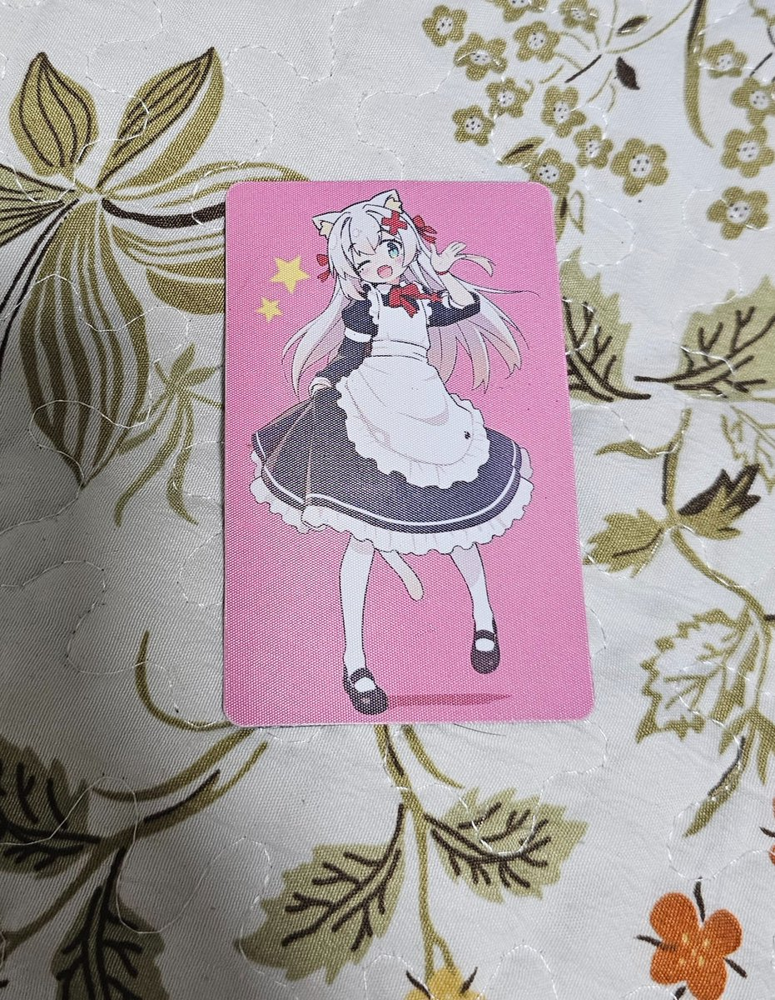

哈哈～我也一样啦，有时真希望自己能沉迷游戏当个无忧无虑的社会废人。可惜那种幸福不属于我。
现在就是头驴拉着磨，转啊转～转啊转～整天除了上班就是刷推，刷推也是为了流量、为了钱……
嗐，以前是有很多爱好，游戏、视频、小说、动漫、翻译之类的，现在全都没力气做了。
整天就是干活、刷推、思考人生。说实话哲学和心理学真的是抑郁人必备，哲学看人与世界的运行结构，心理学剖析“病了”的我和“健康”的他们。真是……
没力气继续写了，完。

现在就是头驴拉着磨，转啊转～转啊转～整天除了上班就是刷推，刷推也是为了流量、为了钱……
嗐，以前是有很多爱好，游戏、视频、小说、动漫、翻译之类的，现在全都没力气做了。
整天就是干活、刷推、思考人生。说实话哲学和心理学真的是抑郁人必备，哲学看人与世界的运行结构，心理学剖析“病了”的我和“健康”的他们。真是……
没力气继续写了，完。

建议家长还是多让孩子玩游戏吧
最好是玩王者荣耀，和平精英，永劫无间，瓦罗兰特之类的多人合作游戏，起码这些游戏可以让他们融入现实社会
不然就会像我这样，染上哲学，政治，心理越来越沉重，甚至会想自杀.... https://t.co/ylZoD2LdaT https://t.co/2dPPKCYXaq
最好是玩王者荣耀，和平精英，永劫无间，瓦罗兰特之类的多人合作游戏，起码这些游戏可以让他们融入现实社会
不然就会像我这样，染上哲学，政治，心理越来越沉重，甚至会想自杀.... https://t.co/ylZoD2LdaT https://t.co/2dPPKCYXaq